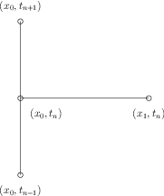

Граничные условия \( u = 0 \) для волнового уравнения означают отражение волны, но при этом \( u \) меняет знак на границе, условие же \( \frac{\partial u}{\partial x} = 0 \) на границе означает отражение волны с сохранением знака решения.
Следующая задача, которую мы рассмотрим заключается в реализации граничного условия второго рода (условие Неймана) \( \frac{\partial u}{\partial x} = 0 \), которое является более сложным для численной реализации, чем условие Дирихле, т.е. при заданном значении \( u \) на границе. Ниже мы приведем два способа разностной аппроксимации условий Неймана: один из них основан на построении модифицированного шаблона вблизи границы, а второй основан на расширении сетки мнимыми ячейками и узлами.
Для описания процесса, когда волна ударяется в границу и отражается назад, используется условие $$ \begin{equation} \tag{27} \frac{\partial u}{\partial \mathbf{n}} \equiv \mathbf{n} \cdot \nabla u = 0, \end{equation} $$ где \( \partial/\partial\mathbf{n} \) --- производная вдоль нормали, внешней к границе. В одномерном случае (отрезок \( [0,l] \)), имеем $$ \frac{\partial}{\partial\mathbf{n}}\Bigg|_{x = l} = \frac{\partial}{\partial x}, \quad \frac{\partial}{\partial\mathbf{n}}\Bigg|_{x = 0} = -\frac{\partial}{\partial x} $$
Построим аппроксимацию граничного условия (27) со вторым порядком аппроксимации по пространственной переменной. Для этого воспользуемся центральной разностной производной: $$ \begin{equation} \tag{28} y_{\mathring{x},0}^n = \frac{y_{1}^n - y_{-1}^n}{2h} = 0. \end{equation} $$
Проблема заключается в том, что \( y_{-1}^n \) не является расчетным значением, так как задано в нерасчетном узле не принадлежащем сетке. Однако, если мы объединим (28) с разностным уравнением (8), записанным в узле \( i = 0 \): $$ \begin{equation} \tag{29} y_0^{n+1} = 2y_0^{n} - y_0^{n-1} + \gamma^2 (y_{1}^n - 2y_{0}^n + y_{-1}^n), \end{equation} $$ мы можем исключить фиктивное значение \( y_{-1}^n \). Учитывая (28), имеем \( y_{-1}^n = y_1^n \). Подставив последнее в (29), получим модифицированное уравнение в граничной точке \( y_0^{n+1} \): $$ \begin{equation} \tag{30} y_0^{n+1} = 2y_0^{n} - y_0^{n-1} + 2\gamma^2 (y_{1}^n - 2y_{0}^n). \end{equation} $$
На рис. 4 представлен шаблон схемы на левой границе области с учетом аппроксимации условия Неймана.
Рисунок 4: Модифицированный шаблон на левой границе для аппроксимации условия Неймана.

Аналогично, получаем апрокссимацию условия (27) на правой границе \( x = l \): $$ y_{\mathring{x},N} = \frac{y_{N+1}^n - y_{N-1}^n}{2h} = 0 $$ Объединяя последнее с разностным уравнением (8) при \( i = N \) получим модифицированное уравнение на правой границе: $$ y_N^{n+1} = 2y_N^n - y_N^{n-1} + 2\gamma^2(y_{N-1}^n - y_{N}^n). $$ Кроме того, на границах нужно построить модификацию разностного уравнения (11) для вычисления значений на первом временном шаге.
В предыдущем пункте мы вывели специальные формулы для расчета вблизи
границ. При этом, учитывая аппроксимацию условий Неймана центральной
разностной производной, мы заменили значения \( y_{-1}^n \) на
\( y_{1}^n \) на левой границе и \( y_{N+1}^n \) на
\( y_{N-1}^n \) на правой границе. Эти наблюдения могут легко
использоваться при программной реализации: мы можем просто
использовать общий шаблон во всех узлах сетки, но написать код так,
чтобы можно было легко заменить y[i-1] на y[i+1] и наоборот. Этого
можно добиться задавая индексы i+1 и i-1 как переменные ip1 (i
plus 1) и im1 (i minus 1), соответственно. Следовательно на
левой границе мы можем определить im1 = i+1, в то время как во
внутренних узлах сетки im1 = i-1. Ниже представлена программная
реализация такого подхода:
i = 0
ip1 = i+1
im1 = ip1 # i-1 -> i+1
y[i] = y_1[i] + gamma2*(y_1[im1] - 2*y[i] + y_1[ip1])
i = N
im1 = i-1
ip1 = im1 # i+1 -> i-1
y[i] = y_1[i] + gamma2*(y_1[im1] - 2*y[i] + y_1[ip1])
На самом деле мы можем создать один цикл как для граничных, так и для внутренних узлов и использовать одну формулу для вычисления значений на новом временном слое:
for i in range(0, N+1):
ip1 = i+1 if i < N+1 else i-1
im1 = i-1 if i > 0 else i+1
y[i] = y_1[i] + gamma2*(y_1[im1] - 2*y[i] + y_1[ip1])
Сценарий wave1d_n0.py содержит полную программную реализацию решения одномерного волнового уравнения с граничными условиями Неймана. В нем реализован тест, использующий «волну-вилку» в качестве начального данного и проверяющий, что начальное состояние возвращается после одного периода. Но такой тест требует выполнения условия \( \gamma = 1 \), так как в этом случае численное решение совпадает с точным решением дифференциальной задачи.
Для того, чтобы улучшить математическую запись и программную реализацию, полезно ввести обозначения для множеств индексов. Это означает, что мы будем писать \( x \), \( i\in \mathcal{I}_x \) вместо \( i = 0, 1, \ldots, N \). Очевидно, что \( \mathcal{I}_x \) должно быть множеством индексов \( \mathcal{I}_x = \{ 0, 1, \ldots, N\} \), но часто удобно использовать символ для этого множества, чем указывать все элементы этого множества. Такие обозначения делают описания алгоритмов и их программную реализацию более простыми.
Первый элемент этого множества будем обозначать \( \mathcal{I}_x^0 \), а последний \( \mathcal{I}_x^{-1} \). Если нужно отбросить первый элемент множества, то будем использовать символ \( \mathcal{I}_x^+ \) для остального подмножества \( \mathcal{I}_x^+ = \{1, 2, \ldots, N\} \). Аналогично, \( \mathcal{I}_x^- = \{0, 1, \ldots, N-1\} \). Все индексы соответствующие внутренним узлам сетки обозначим \( \mathcal{I}_x^i =\{1, 2, \ldots, N-1\} \).
В коде на Python для множеств индексов будет следующее соответствие:
| Обозначение | Python |
| \( \mathcal{I}_x \) | Ix |
| \( \mathcal{I}^0_x \) | Ix[0] |
| \( \mathcal{I}^{-1}_x \) | Ix[-1] |
| \( \mathcal{I}^-_x \) | Ix[:-1] |
| \( \mathcal{I}^+_x \) | Ix[1:] |
| \( \mathcal{I}^i_x \) | Ix[1:-1] |
Важная характерная особенность использования множеств индексов
заключается в том, что формулы и код программы не зависят от
порядка нумерации узлов сетки. Например, обозначение \( i \in
\mathcal{I}_x \) или \( i \in \mathcal{I}_x^0 \) остается
одинаковым и для \( \mathcal{I}_x \), определенном выше, и для
\( \mathcal{I}_x = \{1, 2, \ldots, Q\} \). Аналогично, в коде мы
можем определить Ix = range(N+1) или Ix = range(1,Q), а
выражения типа Ix[0] и Ix[1:-1] остаются корректными. Один
из примеров удобства использования такого подхода --- это
преобразование кода, написанного на языке, где нумерация массивов
начинается с нуля (например, Python или C), в код на языке, где нумерация
массивов начинается с единицы (например, MATLAB или
Fortran). Другое важное применение --- это реализация условий
Неймана с помощью мнимых узлов.
В рассматриваемой нами задаче используются следующие множества индексов: $$ \mathcal{I}_x = \{ 0, 1, \ldots, N\}, \\ \mathcal{I}_t = \{ 0, 1, \ldots, K\}, \\ $$ определяемые в Python следующим образом:
Ix = range(0, N+1)
It = range(0, K+1)
Используя множества индексов, разностную схему можно записать следующим образом: $$ \begin{split} y_i^{n+1} &= y_i^n - \frac{1}{2} \gamma^2(y_{i+1}^n - 2y_i^n + y_{i-1}^n), \quad i \in \mathcal{I}_x, \quad n = 0, \\ y_i^{n+1} &= 2y_i^{n-1} - y_i^n + \gamma^2(y_{i+1}^n - 2y_i^n + y_{i-1}^n), \quad i \in \mathcal{I}_x^i, \quad n \in \mathcal{I}_t^i, \\ y_i^{n+1} &= 0, \quad i = \mathcal{I}_x^0, \quad t \in \mathcal{I}_t^-,\\ y_i^{n+1} &= 0, \quad i = \mathcal{I}_x^{-1}, \quad t \in \mathcal{I}_t^-. \end{split} $$ Соответствующий программный код имеет вид:
# Начальные условия
for i in Ix[1:-1]:
y[i] = y_1[i] - 0.5*gamma2*(y_1[i+1] - 2*y_1[i] + y_1[i-1])
# Цикл по времени
for i in It[1:-1]:
# Вычисление значений во внутренних узлах
for i in Ix[1:-1]:
y[i] = 2*y_2[i] - y_1[i] + \
gamma2*(y_1[i+1] - 2*y_1[i] + y_1[i-1])
# Вычисление граничных условий
i = Ix[0]; y[i] = 0
i = Ix[-1]; y[i] = 0
Сценарий wave1d_n.py использует множества индексов и решает одномерное волновое уравнение с достаточно общими граничными и начальными условиями:
Перейдем к вопросу тестирования реализации условий Неймана. Функция
solver wave1d_n.py
реализованы как условия Дирихле и
Неймана при \( x = 0 \) и \( x = l \). Заманчиво было бы
использовать решение типа квадратичной функции, однако эта функция не
является точным решением задачи с условиями Неймана. Линейная функция
также не подходит, так как реализованы только однородные условия
Неймана, поэтому для тестирования будем использовать только постоянное
решение \( u = \mathrm{const} \).
def test_constant():
"""
Тестируем работу скалярной и векторизованой версий
для постоянного u(x,t). Выполняем расчет на отрезке
[0, l] и применяем условия Неймана и Дирихле на обоих
границах.
"""
u_const = 0.45
u_exact = lambda x, t: u_const
I = lambda x: u_exact(x, 0)
V = lambda x: 0
f = lambda x, t: 0
def assert_no_error(y, x, t, n):
u_e = u_exact(x, t[n])
diff = np.abs(y - u_e).max()
msg = 'diff=%E, t_%d=%g' % (diff, n, t[n])
tol = 1E-13
assert diff < tol, msg
for ul in (None, lambda t: u_const):
for ur in (None, lambda t: u_const):
l = 2.5
c = 1.5
gamma = 0.75
N = 3 # Очень грубая сетка для точного теста
tau = gamma*(l/N)/c
T = 18
solver(I, V, f, c, ul, ur, l, tau, gamma, T,
user_action=assert_no_error,
version='scalar')
solver(I, V, f, c, ul, ur, l, tau, gamma, T,
user_action=assert_no_error,
version='vectorized')
print ul, ur
Другой тест основан на том факте, что погрешность аппроксимации равна нулю в случае когда число Куранта равно единице. Возьмем в качестве начальной функции «волну-площадку», пусть начальная функция распадается на две площадки, каждая смещается в своем направлении. Проверит, что эти две волны отразятся от границ и сформируют начальное распределение после одного периода. Соответствующая тестовая функция представлена ниже
def test_plug():
"""Тестирование возвращается для профиль-площадка после одного периода."""
l = 1.0
c = 0.5
tau = (l/10)/c # N=10
I = lambda x: 0 if abs(x-l/2.0) > 0.1 else 1
u_s, x, t, cpu = solver(
I=I,
V=None, f=None, c=0.5, ul=None, ur=None, l=l,
tau=tau, gamma=1, T=4, user_action=None, version='scalar')
u_v, x, t, cpu = solver(
I=I,
V=None, f=None, c=0.5, ul=None, ur=None, l=l,
tau=tau, gamma=1, T=4, user_action=None, version='vectorized')
tol = 1E-13
diff = abs(u_s - u_v).max()
assert diff < tol
u_0 = np.array([I(x_) for x_ in x])
diff = np.abs(u_s - u_0).max()
assert diff < tol
Остальные тесты используются для анализа погрешности аппроксимации.
Вместо модификации схемы на границе мы можем ввести дополнительные узлы вне области задачи, так что фиктивные значения \( y_{-1}^n \) и \( u_{N+1}^n \) будут определены на сетке. Добавление интервалов \( [-h, 0] \) и \( [l+h,0] \), назовем их мнимые ячейки к расчетной сетке дает все узлы сетки, соответствующие \( i = -1, 2, \ldots, N+1 \). Дополнительные узлы \( i =-1 \) и \( i = N+1 \) назовем мнимыми узлами, а значения в этих узлах \( y_{-1}^{n} \) и \( y_{N+1}^n \) назовем мнимыми значениями
Основная идея состоит в том, чтобы быть уверенным, что всегда будет выполняться $$ u_{-1}^n = u_{1}^n \quad \textrm{и}\quad u_{N+1}^n = u_{N-1}^n, $$ потому что тогда использование стандартной разностной схемы в узлах \( i = 0 \) и \( i = N \) будет корректным и будет гарантировать, что решение согласуется с граничным условием Неймана.
Массив y, содержащий решение, должен содержать дополнительные
элементы с мнимыми узлами:
y = zeros(N+3)
Массивы y_1 и y_2 необходимо определить аналогично.
К сожалению стандартная индексация массивов в Python (индексация
начинается с 0), не удобна в случае использования рассматриваемого
подхода. В этом случае возникает несоответствие математической
индексации \( i = -1, 0, 1, \ldots, N+1 \) и индексации
Python 0, 1, ..., N+2. Один способ решения этой проблемы состоит в
изменении математической нумерации в разностной схеме и записать
$$
y_i^{n+1} = \ldots, \quad i = 1, 2, \ldots, N + 1
$$
вместо \( i = 0, 1, \ldots, N \). В этом случае номера мнимых узлов
будут \( i=0 \) и \( i = N+2 \). Можно предложить решение лучше
основанное на использовании множеств индексов: мы скроем значения
индексов и будем оперировать понятиями внутренних и граничных узлов.
С этой целью мы определим y нужной длины и Ix ---
соответствующие индексы реальных узлов
y = np.zeros(N+3)
Ix = range(1, u.shape[0]-1)
Это значит, что граничные узлы будут иметь индексы Ix[0] и
Ix[-1] (как и раньше). Сначала мы вычислим решение физических
узлах (т.е. во внутренних узлах сетки):
for i in Ix:
y[i] = - y_2[i] + 2*y_1[i] + \
gamma2*(y_1[i-1] - 2*y_1[i] + y_1[i+1]) + \
tau2*f(x[i-Ix[0]], t[n])
Такое индексирование будет сложнее при вызове функций V(x) и
f(x,t), так как соответствующая координата \( x \) задана как
x[i - Ix[0]]:
for i in Ix:
y[i] = y_1[i] + tau*V(x[i-Ix[0]]) + \
0.5*gamma2*(y_1[i-1] - 2*y_1[i] + y_1[i+1]) + \
0.5*tau2*f(x[i-Ix[0]], t[0])
Осталось обновить решение в мнимых узлах, т.е. y[0] и y[-1]
(или y[N+2]). Для граничного условия Неймана
\( \frac{\partial u}{\partial x} = 0 \), значения в мнимых узлах
должны быть равны значениям в соответствующих внутренних узлах. Ниже
приведен соответствующий фрагмент кода:
# Мнимые значения устанавливаем в соответствии с du/dx=0
i = Ix[0]
y[i-1] = y[i+1]
i = Ix[-1]
y[i+1] = y[i-1]
Решение, график которого будем строить --- срез y[1:-1]
или y[Ix[0]:Ix[-1]+1]. Этот срез будет возвращать функция
solver. Полностью программную реализацию этого подхода можно найти
в файле wave1d_n_ghost.py.
Необходимо быть аккуратным с тем, как хранить сетки по пространству
и времени. Пусть x --- физические узлы
x = linspace(0, l, N+1)
«Стандартная реализация» начальных данных
for i in Ix:
y_1[i] = I(x[i])
становится в этом случае ошибочной, так как y_1 и x имеют
разные длины и индекс i соответствует двум различным узлам
сетки. На самом деле, x[i] соответствует
y_1[i+1]. Правильная реализация имеет вид
for i in Ix:
y_1[i] = I(x[i - Ix[0]])
Аналогично, использование при вычислении правой части выражения
f(x[i], t[n]) неправильно, если x определено на множестве
физических точек. Следовательно, x[i] нужно заменить на
x[i - Ix[0]].
Альтернативный способ решения этой проблемы --- задать массив x
так, чтобы он содержал мнимые точки и y[i] было значением в
x[i].
Мнимые ячейки добавляются только к границам, на которых заданы условия Неймана. Предположим, что на \( x=l \) задано условие Дирихле, а на \( x=0 \) --- условие Неймана. В этом случае к сетке добавляется одна мнимая ячейка \( [-h, 0] \), поэтому множестве индексов для физических узлов --- \( \{1, 2, \ldots, N+1\} \). Ниже представлен соответствующий фрагмент кода:
y = zeros(N+2)
Ix = range(1, y.shape[0])
...
for i in Ix[:-1]:
y[i] = 2*y_1[i] - y_2[i] + \
gamma2*(y_1[i-1] - 2y[i] + y[i+1]) + \
tau2*f(x[i-Ix[0]], t[n])
i = Ix[-1]
y[i] = ur # условия Дирихле
i = Ix[0]
y[i-1] = y[i+1] # условие Неймана
Физическое решение, график которого будет строится, --- y[1:] или
y[Ix[0]:Ix[-1]+1].
Следующее обобщение одномерного волнового уравнения (1) или (12) --- введение переменной скорости распространения волны \( c = c(x) \). Такое уравнение описывает процесс протекающий в областях состоящих из сред с разными физическими свойствами. Когда среды отличаются физическими свойствами, такими как плотность или пористость, скорость распространения волны в этом случае зависит от положения в пространстве.
Вместо \( c^2(x) \) будем использовать более удобное обозначение \( k(x) = c^2(x) \) для коэффициента уравнения. Одномерное волновое уравнение с переменной скоростью распространение волны принимает вид: $$ \begin{equation} \tag{31} \frac{\partial^2 u}{\partial t^2} = \frac{\partial }{\partial x} \left( k(x) \frac{\partial u}{\partial x} \right) + f(x,t). \end{equation} $$
В случае достаточно гладких коэффициентов и решения дифференциальный оператор \( \frac{\partial }{\partial x} \left( k(x) \frac{\partial u}{\partial x} \right) \) во внутренних узлах сетки будем аппроксимировать разностным оператором \( (a y_{\bar{x}})_{x} \). Для аппроксимации со вторым порядком необходимо выбрать коэффициенты разностного оператора так, чтобы $$ \begin{align} \tag{32} \frac{a_{i+1} - a_i}{h} &= k'(x_i) + O(h^2), \\ \tag{33} \frac{a_{i+1} + a_i}{2} &= k(x_i) + O(h^2). \end{align} $$
Этим условиям удовлетворяют, в частности, следующие формулы для определения \( a_i \): $$ \begin{align} \tag{34} a_i &= k_{i-1/2} = k(x_i - 0.5h),\\ \tag{35} a_i &= \frac{k_{i-1} + k_i}{2},\\ \tag{36} a_i &= 2 \left( \frac{1}{k_{i-1}} + \frac{1}{k_i} \right)^{-1}. \end{align} $$
Выражение (35) --- среднее арифметическое значений коэффициента в соседних узлах и часто используется для гладких коэффициентов, среднее гармоническое (36) часто используется при аппроксимации коэффициентов с сильно меняющимися значениями.
Правую часть \( f(x,t) \) уравнения (31) аппроксимируем следующим образом $$ \varphi_i^n = f(x_i,t_n). $$
Таким образом, мы можем аппроксимировать уравнение (31) на сетке \( \omega_{h\tau} \) следующей разностной схемой: $$ \begin{equation} \tag{37} y_{\bar{t}t} = (a y_{\bar{x}})_{x} + \varphi, \quad (x,t) \in \omega_{h\tau}, \end{equation} $$
Осталось выразить из уравнения (37) значение \( y_i^{n+1} \): $$ \begin{align} \tag{38} y_i^{n+1} =& 2y_i^n - y_i^{n-1} \nonumber \\ & + \frac{\tau^2}{h^2} \left( a_{i+1} (y_{i+1}^n - y_{i}^n) - a_{i} (y_{i}^n - y_{i-1}^n) \right) \nonumber\\ &+ \tau^2 \varphi_i^n \tag{39} \end{align} $$
Рассмотрим аппроксимацию условий Неймана на границе \( x = l = Nh \): $$ \frac{y_{N+1}^n - y_{N-1}^n}{2h} = 0 \Rightarrow y_{N+1}^n = y_{N-1}^n. $$ Записывая разностную схему (38) в узле \( i = N \) и учитывая, что \( y_{N+1} = y_{N-1} \), получим $$ \begin{align} \tag{40} y_N^{n+1} &= 2 y_{N}^n - y_N^{n-1} \nonumber\\ &\quad + \frac{\tau^2}{h^2} \left( a_{N+1} (y_{N+1}^n - y_{N}^n) - a_{N} (y_{N}^n - y_{N-1}^n) \right) + \tau^2 \varphi_N^n \nonumber\\ &= 2 y_{N}^n - y_N^{n-1} + \frac{\tau^2}{h^2} \left( (a_{N+1} + a_N) (y_{N-1} - y_N) \right) + \tau^2\varphi_i^n \nonumber\\ &\approx 2 y_{N}^n - y_N^{n-1} + 2\frac{\tau^2}{h^2} \left( a_{N+1/2} (y_{N-1} - y_N) \right) + \tau^2\varphi_N^n. \tag{41} \end{align} $$
Здесь мы использовали условия (32)--(33) и \( a_{N+1/2} = k(x_N) \). Кроме того вместо \( a_{N+1/2} \) можно использовать \( a_N \).
Выражение (40) с \( a_N \) вместо \( a_{N+1/2} \) можно записать в форме $$ a_N y_{x,N}^n + \frac{h}{2} y_{\bar{t}t,N}^n = \frac{h}{2} \varphi_N^n $$ Отметим, что подобные аппроксимации переменных коэффициентов и граничных условий Неймана мы можем получить, используя интегро-интерполяционный метод (метод баланса) или метод конечных элементов.
Иногда волновое уравнение содержит переменный коэффициент перед второй производной по времени: $$ \begin{equation} \tag{42} \varrho(x) \pdd{2}{u}{t} = \pd{}{x} \left( k(x) \pd{u}{x} \right) + f(x,t). \end{equation} $$ Такое уравнение описывает, например, упругие волны в стержне с переменной плотностью.
Естественная аппроксимация (42) может выглядеть следующим образом: $$ \begin{equation} \tag{43} \varrho y_{\bar{t}t} = \left( a y_{\bar{x}}\right)_x = \varphi, \quad (x,t) \in \omega_{h\tau} \end{equation} $$
Очевидно, что коэффициент \( \varrho \) не добавляет особых трудностей, так не требует какогло-либо осреднения, а вычисляется в узле сетки.
Существует два механизма исчезновения волн. В двумерном и трехмерном случаях энергия волн распределяется в пространстве, и, следовательно, с учетом сохранения энергии приходим к тому, что должна уменьшаться амплитуда колебаний. Этот эффект отсутствует в одномерном случае. Затухания являются второй причиной уменьшения амплитуды. Например, колебания струны исчезают из-за затуханий, обусловленных сопротивлением воздуха и неупругих эффектов в струне.
Простейший способ ввести затухания в модель заключается в добавлении первой производной по времени в уравнение: $$ \begin{equation} \tag{44} \pdd{2}{u}{t} + b\pd{u}{t} = c^2\pdd{2}{u}{x} + f(x,t), \end{equation} $$ где \( b \geq 0 \) заданный коэффициент затухания.
Естественную аппроксимацию уравнения (44) можно получить, используя центральную разностную производную $$ \begin{equation} \tag{45} y_{\bar{t}t} + b y_{\mathring{t}} = c^2 y_{\bar{x}x} + \varphi. \end{equation} $$
Решая уравнение (45) относительно \( y_i^{n+1} \), получим $$ \begin{equation} \tag{46} y_i^{n+1} = (1 + 0.5b\tau)^{-1} \left((0.5b\tau - 1)y_i^{n-1} + 2 y_i^n + \gamma^2 (y_{i+1}^n - 2y_i^n + y_{i-1}^n) + \varphi_i^n \right), \end{equation} $$ для \( i \in \mathcal{I}_x^i \) и \( n \geq 1 \). Также нужно получить уравнения для \( y_i^1 \) и для граничных узлов в случае условий Неймана.
Обычно во многих физических процессах затухания являются малыми и видны только на больших временных отрезках. Этот факт делает обоснованным использование для большого числа приложений стандартного волнового уравнения без затуханий.
Программа wave1d_dn_vc.py представляет собой довольно общий код для задач одномерного распространения волн, который нацелен на следующую начально-краевую задачу: $$ \begin{align} \tag{47} \pdd{2}{u}{t} &= \pd{}{x}\left( c^2(x) \pd{u}{x} \right) + f(x,t), &\quad x\in (0,l),\ t &\in (0,T],\\ \tag{48} u(x,0) &= I(x), &\quad x &\in [0,l],\\ \tag{49} \pd{u(x,0)}{t} &= V(x), &\quad x &\in [0,l],\\ \tag{50} u(0,t) &= U_0(t)\ \textrm{или}\ \pd{u(0,t)}{x}=0, &\quad t &\in (0, T],\\ \tag{51} u(0,t) &= U_l(t)\ \textrm{или}\ \pd{u(l,t)}{x}=0, &\quad t &\in (0, T]. \end{align} $$
Единственная особенность данной задачи, в сравнении с предыдущей, состоит в том, что заданы неоднородные условия Дирихле (зависящие от времени). Реализация этого тривиальная
i = Ix[0]
y[i] = ul(t[n+1])
i = Ix[-1]
y[i] = ur(t[n+1])
Векторизация используется только внутри цикла по времени, а не в для начальных условиях, так как эта начальная работа незначительна по сравнению с моделированием больших временных отрезков в одномерном случае.
Решение с помощью явной разностной схемы, описанной в
параграфе Обобщения: переменная скорость распространения волны общей начально-краевой задачи
(47) – (51)
можно реализовать с помощью функции solver (см. сценарий
wave1d_dn_vc.py). Эта функция
расширяет простейшую функцию solver из сценария
wave1d_1.py, добавлением реализации
условий Неймана, зависящих от времени условий Дирихле, а также
переменной скорости распространения волны:
Ниже представлен код функции solver из сценария
wave1d_dn_vc.py:
def solver(I, V, f, c, ul, ur, l, tau, gamma, T,
user_action=None, version='scalar',
stability_safety_factor=1.0):
"""Решается уравнение $u_tt=(c^2*u_x)_x + f$ на $(0,l)\times(0,T]$."""
Nt = int(round(T/tau))
t = np.linspace(0, Nt*tau, Nt+1) # Сетка по времени
# Находим max(c) используя мнимую сетку и адаптируем пространственный
# шаг h согласно gamma и tau
if isinstance(c, (float,int)):
c_max = c
elif callable(c):
c_max = max([c(x_) for x_ in np.linspace(0, l, 101)])
h = tau*c_max/(stability_safety_factor*gamma)
Nx = int(round(l/h))
x = np.linspace(0, l, Nx+1) # Пространственная сетка
# Представляем c(x) как массив
if isinstance(c, (float,int)):
c = np.zeros(x.shape) + c
elif callable(c):
# Вызываем c(x) и заполняем массив c
c_ = np.zeros(x.shape)
for i in range(Nx+1):
c_[i] = c(x[i])
c = c_
q = c**2
gamma2 = (tau/h)**2; tau2 = tau*tau # Вспомогательные переменные
# Обертка для заданных пользователем f, I, V, ul, ur
if f is None or f == 0:
f = (lambda x, t: 0) if version == 'scalar' else \
lambda x, t: np.zeros(x.shape)
if I is None or I == 0:
I = (lambda x: 0) if version == 'scalar' else \
lambda x: np.zeros(x.shape)
if V is None or V == 0:
V = (lambda x: 0) if version == 'scalar' else \
lambda x: np.zeros(x.shape)
if ul is not None:
if isinstance(ul, (float,int)) and ul == 0:
ul = lambda t: 0
if ur is not None:
if isinstance(ur, (float,int)) and ur == 0:
ur = lambda t: 0
# Делаем хэш всех входных данных
import hashlib, inspect
data = inspect.getsource(I) + '_' + inspect.getsource(V) + \
'_' + inspect.getsource(f) + '_' + str(c) + '_' + \
('None' if ul is None else inspect.getsource(ul)) + \
('None' if ur is None else inspect.getsource(ur)) + \
'_' + str(l) + str(tau) + '_' + str(gamma) + '_' + str(T) + \
'_' + str(stability_safety_factor)
hashed_input = hashlib.sha1(data).hexdigest()
if os.path.isfile('.' + hashed_input + '_archive.npz'):
# Расчет уже запущен
return -1, hashed_input
y = np.zeros(Nx+1) # Массив решения на новом слое
y_1 = np.zeros(Nx+1) # Решение на слое n
y_2 = np.zeros(Nx+1) # Решение на слое n-1
import time; t0 = time.clock() # Измерение процессорного времени
Ix = range(0, Nx+1)
It = range(0, Nt+1)
# Задаем начальные условия в y_1
for i in range(0,Nx+1):
y_1[i] = I(x[i])
if user_action is not None:
user_action(y_1, x, t, 0)
# Специальная формула для первого слоя
for i in Ix[1:-1]:
y[i] = y_1[i] + tau*V(x[i]) + \
0.5*gamma2*(0.5*(q[i] + q[i+1])*(y_1[i+1] - y_1[i]) - \
0.5*(q[i] + q[i-1])*(y_1[i] - y_1[i-1])) + \
0.5*tau2*f(x[i], t[0])
i = Ix[0]
if ul is None:
# Установка граничных условий du/dn = 0
# x=0: i-1 -> i+1 так как y[i-1]=y[i+1]
# x=l: i+1 -> i-1 так как y[i+1]=y[i-1])
ip1 = i+1
im1 = ip1 # i-1 -> i+1
y[i] = y_1[i] + tau*V(x[i]) + \
0.5*gamma2*(0.5*(q[i] + q[ip1])*(y_1[ip1] - y_1[i]) - \
0.5*(q[i] + q[im1])*(y_1[i] - y_1[im1])) + \
0.5*tau2*f(x[i], t[0])
else:
y[i] = ul(tau)
i = Ix[-1]
if ur is None:
im1 = i-1
ip1 = im1 # i+1 -> i-1
y[i] = y_1[i] + tau*V(x[i]) + \
0.5*gamma2*(0.5*(q[i] + q[ip1])*(y_1[ip1] - y_1[i]) - \
0.5*(q[i] + q[im1])*(y_1[i] - y_1[im1])) + \
0.5*tau2*f(x[i], t[0])
else:
y[i] = ur(tau)
if user_action is not None:
user_action(y, x, t, 1)
# Обновляем данные для следущего слоя
#y_2[:] = y_1; y_1[:] = y # безопасно, но медленнее
y_2, y_1, y = y_1, y, y_2
for n in It[1:-1]:
# Расчет во внутренних узлах
if version == 'scalar':
for i in Ix[1:-1]:
y[i] = - y_2[i] + 2*y_1[i] + \
gamma2*(0.5*(q[i] + q[i+1])*(y_1[i+1] - y_1[i]) - \
0.5*(q[i] + q[i-1])*(y_1[i] - y_1[i-1])) + \
tau2*f(x[i], t[n])
elif version == 'vectorized':
y[1:-1] = - y_2[1:-1] + 2*y_1[1:-1] + \
gamma2*(0.5*(q[1:-1] + q[2:])*(y_1[2:] - y_1[1:-1]) -
0.5*(q[1:-1] + q[:-2])*(y_1[1:-1] - y_1[:-2])) + \
tau2*f(x[1:-1], t[n])
else:
raise ValueError('version=%s' % version)
# Добавляем граничные условия
i = Ix[0]
if ul is None:
# Устанавливаем граничные условия
# x=0: i-1 -> i+1 так как y[i-1]=y[i+1] при du/dn=0
# x=l: i+1 -> i-1 так как y[i+1]=y[i-1] при du/dn=0
ip1 = i+1
im1 = ip1
y[i] = - y_2[i] + 2*y_1[i] + \
gamma2*(0.5*(q[i] + q[ip1])*(y_1[ip1] - y_1[i]) - \
0.5*(q[i] + q[im1])*(y_1[i] - y_1[im1])) + \
tau2*f(x[i], t[n])
else:
y[i] = ul(t[n+1])
i = Ix[-1]
if ur is None:
im1 = i-1
ip1 = im1
y[i] = - y_2[i] + 2*y_1[i] + \
gamma2*(0.5*(q[i] + q[ip1])*(y_1[ip1] - y_1[i]) - \
0.5*(q[i] + q[im1])*(y_1[i] - y_1[im1])) + \
tau2*f(x[i], t[n])
else:
y[i] = ur(t[n+1])
if user_action is not None:
if user_action(y, x, t, n+1):
break
# Обновляем данные для следующего слоя
#y_2[:] = y_1; y_1[:] = y
y_2, y_1, y = y_1, y, y_2
y = y_1
cpu_time = t0 - time.clock()
return cpu_time, hashed_input
Реализация основного алгоритма аналогично рассмотренным выше. Поэтому
остановимся только на участке кода, связанного с переменной
hashed_input, используемой для задания имени итогового архивного
файла со всеми решениями. Переменная hashed_input отражает все
значения важных параметров задачи так, что имя файла будет
уникальным. Строка hashed_input генерируется с использованием
модулей hashlib и inspect на основе входных параметров функции
solver:
# Делаем хэш всех входных данных
import hashlib, inspect
data = inspect.getsource(I) + '_' + inspect.getsource(V) + \
'_' + inspect.getsource(f) + '_' + str(c) + '_' + \
('None' if ul is None else inspect.getsource(ul)) + \
('None' if ur is None else inspect.getsource(ur)) + \
'_' + str(l) + str(tau) + '_' + str(gamma) + '_' + str(T) + \
'_' + str(stability_safety_factor)
hashed_input = hashlib.sha1(data).hexdigest()
Для получения исходного кода функции f в качестве строки
используется inspect.getsource(f). Все входные данные, функции и
переменные объединяются в строку data, затем функция hashlib.sha1
создает уникальное более короткую строку фиксированной длины (40
символов) из строки data, которую можно использовать в качестве
имени файла архива.
Обратите внимание, что такое построение строки data не совсем
подходящее: если, например, I --- это формула с параметрами, и
параметры изменяются, исходный код остается тем же самым и
соответственно хэш-строка остается неизменной. Поэтому данная
реализация должна использоваться аккуратно!
Далее переменная hashed_input используется для избегания перезапуска
ранее выполнявшегося эксперимента. Если архивный файл с именем
основанным на hashed_input уже существует, то расчет с текущим
набором параметров уже был выполнен ранее и можно пропустить
выполнение повторной работы. функция solver возвращает процессорное
время cpu и hashed_input, при этом отрицательное значение cpu
означает, что расчет не был запущен. В этом случае мы не должны
запускать метод close_file объекта класса PlotAndStoreSolution
(см. раздел Реализация функции действий полозователя в виде класса). Типичное
использование переменных hashed_input и cpu выглядит следующим
образом:
action = PlotAndStoreSolution(...)
tau = (l/Nx)/gamma # выбор ограничения устойчивости по заданному Nx
cpu, hashed_input = solver(
I=lambda x: 0 if abs(x-l/2.0) > 0.1 else 1,
V=0, f=0, c=1, ul=lambda t: 0, ur=None, l=l,
tau=tau, gamma=gamma, T=T,
user_action=action, version='vectorized',
stability_safety_factor=1)
action.make_movie_file()
if cpu > 0:
action.close_file(hashed_input)
Точные решения численных уравнений всегда привлекательны для целей тестирования, так как программное обеспечение должно воспроизводить такие решения с машинной точностью. Для условий Дирихле мы можем построить функцию линейную по \( t \) и квадратичную по \( x \), которая является точным решением схемы, в то время как для условий Неймана остается только постоянное решение.
Более общий метод верификации --- проверка скорости сходимости (см., например, раздел Пробные функции)
savez
При выполнении моделирования в качестве результата получаются большие
массивы, содержащие решение в узлах, и мы должны сохранять их на
диск. В Python доступно несколько методов. Мы рекомендуем использовать
специализированные решения для больших массивов, а не стандартные
инструменты хранения файлов, такие как pickle (cPickle для
ускорения в Python версии 2) и shelve.
Функция numpy.savez может сохранить набор массивов в именованный
файл в zip-архиве. Связанная с ней функция numpy.load может
использоваться для чтения файла. В основном, мы вызываем
numpy.savez(filename, **kwargs), где kwargs --- словарь,
содержащий имя массива в качестве ключа и соответствующий
объект-массив в качестве значения. Очень часто решению в момент
времени дается естественное имя, где имя переменной и счетчик
временного слоя объединяются, например, u11 или v39. Предположим, что n
--- счетчик временного слоя и у нас есть два массива с решениями u и
v, которые мы хотим сохранить в zip-архив. Соответствующий код
представлен ниже
import numpy as np
u_name = 'u%04d' % n # имя массива
v_name = 'v%04d' % n # имя массива
kwargs = {u_name: u, v_name: v} # аргументы ключевых слов для savez
fname = '.mydata%04.dat' % n
np.savez(fname, **kwargs)
if n == 0: # сохраняем x один раз
np.savez('.mydata_x.dat', x=x)
Так как имя массива должно быть передано в качестве аргумента
ключевого слова для savez, и имя генерируется как показано в
примере, становится сложно сделать вызов, но с помощью словаря
kwargs и **kwargs, который отправляет каждую пару ключ-значение в
качетсве отдельных аргументов ключевого слова, задача выполняется.
Каждый отдельный вызов функции numpy.savez создает новый файл
(zip-архив) с расширением .npz (добавляется автоматически). Очень
удобно собрать все результаты в одном архиве. Это можно сделать
слиянием индивидуальных архивов в один zip-архив:
def merge_zip_archives(individual_archives, archive_name):
"""
Слияние индивидуальных zip-архивов, сделанных с помощью
numpy.savez, в один архив с именем archive_name.
Отдельные архивы могут быть заданы как список имен.
В результате выполнения этой функции все отдельные
архивы удаляются и создается один новый архив.
"""
import zipfile
archive = zipfile.ZipFile(
archive_name, 'w', zipfile.ZIP_DEFLATED,
allowZip64=True)
if isinstance(individual_archives, (list,tuple)):
filenames = individual_archives
elif isinstance(individual_archives, str):
filenames = glob.glob(individual_archives)
# Открываем каждый архив и пишем его в общий архив
for filename in filenames:
f = zipfile.ZipFile(filename, 'r',
zipfile.ZIP_DEFLATED)
for name in f.namelist():
data = f.open(name, 'r')
# Сохраняем под именем без .npy
archive.writestr(name[:-4], data.read())
f.close()
os.remove(filename)
archive.close()
Этот подход используется в разделе
Реализация функции действий полозователя в виде класса в методе close_file.
Архивы, созданные с помощью savez или объединенный массив, описанный
выше, с именем вида myarchive.npz могут быть загружены с помощью
функции numpy.load:
import numpy as np
array_names = np.load(`myarchive.npz`)
for array_name in array_names:
# array_names[array_name] is the array itself
# e.g. plot(array_names['t'], array_names[array_name])
Полезная особенность сценария wave1d_dn_vc.py --- это реализация функции действия пользователя в виде класса. Эта часть сценария может потребовать некоторых пояснений.
Класс для построения графиков, очистки файлов, создания анимированных
графиков, которые выполнялись в функции wave1d_1.viz, можно
реализовать следующим образом:
class PlotAndStoreSolution:
"""
Класс для функиции user_action в solver.
Только визуализация решения.
"""
def __init__(
self,
casename='tmp', # Префикс в именах файлов
umin=-1, umax=1, # Задаются границы по оси y
pause_between_frames=None, # Скорость видео
backend='matplotlib', # или 'gnuplot' или None
screen_movie=True, # Показывать видео на экране?
title='', # Дополнительное сообщение в title
skip_frame=1, # Пропуск каждого skip_frame кадра
filename=None): # Имя файла с решением
self.casename = casename
self.yaxis = [umin, umax]
self.pause = pause_between_frames
self.backend = backend
if backend is None:
# Использовать matplotlib
import matplotlib.pyplot as plt
elif backend in ('matplotlib', 'gnuplot'):
module = 'scitools.easyviz.' + backend + '_'
exec('import %s as plt' % module)
self.plt = plt
self.screen_movie = screen_movie
self.title = title
self.skip_frame = skip_frame
self.filename = filename
if filename is not None:
# Сохранение временной сетки, когда y записывается в файл
self.t = []
filenames = glob.glob('.' + self.filename + '*.dat.npz')
for filename in filenames:
os.remove(filename)
# Очистка старых кадров
for filename in glob.glob('frame_*.png'):
os.remove(filename)
def __call__(self, u, x, t, n):
"""
Функция обратного вызова user_action, вызываемая солвером:
сохранение решения, построение графиков на экране и
и сохранение их в файл.
"""
# Сохраняем решение u в файл, используя numpy.savez
if self.filename is not None:
name = 'u%04d' % n # имя массива
kwargs = {name: u}
fname = '.' + self.filename + '_' + name + '.dat'
np.savez(fname, **kwargs)
self.t.append(t[n]) # сохранение соответствующего временного знаяения
if n == 0: # сохранение массива x один раз
np.savez('.' + self.filename + '_x.dat', x=x)
# Анимация
if n % self.skip_frame != 0:
return
title = 't=%.3f' % t[n]
if self.title:
title = self.title + ' ' + title
if self.backend is None:
# анимация matplotlib
if n == 0:
self.plt.ion()
self.lines = self.plt.plot(x, u, 'r-')
self.plt.axis([x[0], x[-1],
self.yaxis[0], self.yaxis[1]])
self.plt.xlabel('x')
self.plt.ylabel('u')
self.plt.title(title)
self.plt.legend(['t=%.3f' % t[n]])
else:
# Обновляем решение
self.lines[0].set_ydata(u)
self.plt.legend(['t=%.3f' % t[n]])
self.plt.draw()
else:
# анимация scitools.easyviz
self.plt.plot(x, u, 'r-',
xlabel='x', ylabel='u',
axis=[x[0], x[-1],
self.yaxis[0], self.yaxis[1]],
title=title,
show=self.screen_movie)
# пауза
if t[n] == 0:
time.sleep(2) # показываем начальное решение 2 с
else:
if self.pause is None:
pause = 0.2 if u.size < 100 else 0
time.sleep(pause)
self.plt.savefig('frame_%04d.png' % (n))
def make_movie_file(self):
"""
Создается подкаталог на основе casename, перемещаем все файлы
с кадрами в этот каталог и создаем файл index.html для показа
видео в браузере (как последовательности PNG файлов).
"""
directory = self.casename
if os.path.isdir(directory):
shutil.rmtree(directory) # rm -rf directory
os.mkdir(directory) # mkdir directory
# mv frame_*.png directory
for filename in glob.glob('frame_*.png'):
os.rename(filename, os.path.join(directory, filename))
os.chdir(directory) # cd directory
fps = 4 # frames per second
if self.backend is not None:
from scitools.std import movie
movie('frame_*.png', encoder='html',
output_file='index.html', fps=fps)
# Создаем другие видео форматы: Flash, Webm, Ogg, MP4
codec2ext = dict(flv='flv', libx264='mp4', libvpx='webm',
libtheora='ogg')
filespec = 'frame_%04d.png'
movie_program = 'avconv' # или 'ffmpeg'
for codec in codec2ext:
ext = codec2ext[codec]
cmd = '%(movie_program)s -r %(fps)d -i %(filespec)s '\
'-vcodec %(codec)s movie.%(ext)s' % vars()
os.system(cmd)
os.chdir(os.pardir) # возвращаемся в родительский каталог
def close_file(self, hashed_input):
"""
Сливаем все файлы в один архив.
hashed_input --- строка, отражающая входные данные
для моделирования (создана функцией solver).
"""
if self.filename is not None:
np.savez('.' + self.filename + '_t.dat',
t=np.array(self.t, dtype=float))
archive_name = '.' + hashed_input + '_archive.npz'
filenames = glob.glob('.' + self.filename + '*.dat.npz')
merge_zip_archives(filenames, archive_name)
print 'Archive name:', archive_name
# data = numpy.load(archive); data.files holds names
# data[name] extract the array
Представленный выше класс поддерживает построение графиков с помощью
Matplotlib (backend=None) или SciTools (backend=matplotlib или
backend=gnuplot).
Конструктор показывает как можно гибко импортировать графический
модуль как scitools.easyviz.gnuplot_ или
scitools.easyviz.matplotlib_ (символ подчеркивания в конце
обязателен). С помощью параметра screen_movie мы можем подавлять
вывод графиков на экран. В качестве альтернативы, для медленных
анимированных графиков, связанных с мелкой расчетной сеткой, мы можем
задать skip_frame=10, устанавливая показ каждого десятого кадра.
Метод __call__ позволяет объектам класса PlotAndStoreSolution
вести себя как функции, так что мы можем передавать объект, например
p, в качестве аргумента user_action в функцию solver, и любой
вызов user_action будет вызывать p.__call__. Метод __call__
строит график решения на экране, сохраняет график в файл, а также
сохраняет решение в файл для дальнейшего использования.
Функция pulse в wave1d_dn_vc.py
демонстрирует движение волны в разнородных средах с переменным
\( c \). Можно задать интервал, на котором скорость распространения волны
уменьшается пропорционально множителю slowness_factor (или
увеличивается если задать этот множитель меньшим единицы).
Четыре типа начального распределения реализованы:
plug)gaussian)cosinehat)half-cosinehat)loc=center) или на левом конце (loc=left) расчетной
области. Импульсы, расположенные посередине, распадаются на две части,
каждая с амплитудой, в два раза меньшей начальной, и движутся в
противоположных направлениях. Если импульс расположен на левом конце
(центр импульса в \( x=0 \)) и задано условие Неймана, генерируется только
волна бегущая вправо. Также возникает волна, движущаяся влево, но она
бежит от \( x=0 \) в отрицательной части оси \( x \) и не видна на отрезке
\( [0, l] \). Функция pulse является удобным инструментом для вариации с
разными формами импульса и расположениями сред с разными скоростями
распространения волны. Ниже представлена реализация данной функции:
def pulse(gamma=1, # максимальное число Куранта
Nx=200, # число узлов по пространству
animate=True,
version='vectorized',
T=2, # конечное время
loc='left', # размещение начального условия
pulse_tp='gaussian', # pulse/init.cond.
slowness_factor=2, # скорость распространения волны в правой среде
medium=[0.7, 0.9], # отрезок правой области (среды)
skip_frame=1,
sigma=0.05):
"""
Различные пико-образные начальные условия на [0,1].
Скорость распространения волны уменьшается в slowness_factor раз
венутри среды. Параметр loc может принимать значения 'center' или 'left',
в зависимости от того, где располагается пик начальных условий.
Параметр sigma определяет ширину импульса.
"""
# Используем безразмерные параметры: l=1 для длины области,
# c_0=1 для скорости распространения волны вне области.
l = 1.0
c_0 = 1.0
if loc == 'center':
xc = l/2
elif loc == 'left':
xc = 0
if pulse_tp in ('gaussian','Gaussian'):
def I(x):
return np.exp(-0.5*((x-xc)/sigma)**2)
elif pulse_tp == 'plug':
def I(x):
return 0 if abs(x-xc) > sigma else 1
elif pulse_tp == 'cosinehat':
def I(x):
# Один период косинуса
w = 2
a = w*sigma
return 0.5*(1 + np.cos(np.pi*(x-xc)/a)) \
if xc - a <= x <= xc + a else 0
elif pulse_tp == 'half-cosinehat':
def I(x):
# Половина периода косинуса
w = 4
a = w*sigma
return np.cos(np.pi*(x-xc)/a) \
if xc - 0.5*a <= x <= xc + 0.5*a else 0
else:
raise ValueError(u'Ошибочный_tp="%s"' % pulse_tp)
def c(x):
return c_0/slowness_factor \
if medium[0] <= x <= medium[1] else c_0
umin=-0.5; umax=1.5*I(xc)
casename = '%s_Nx%s_sf%s' % \
(pulse_tp, Nx, slowness_factor)
action = PlotMediumAndSolution(
medium, casename=casename, umin=umin, umax=umax,
skip_frame=skip_frame, screen_movie=animate,
backend='matplotlib', filename='tmpdata')
# Выбор ограничения устойчивости при заданном Nx, худший случай c
# (меньший gamma будет использовать этот шаг tau, но меньшее Nx)
tau = (l/Nx)/c_0
cpu, hashed_input = solver(I=I, V=None, f=None, c=c, ul=None, ur=None,
l=l, tau=tau, gamma=gamma, T=T,
user_action=action, version=version,
stability_safety_factor=1)
action.make_movie_file()
action.close_file(hashed_input)
Используемый здесь класс PlotMediumAndSolution --- это подкласс
класса PlotAndStoreSolution, где среда с уменьшенным коэффициентом
\( c \), заданная параметром medium, отображается на графике.
Параметр \( N_x \) в функции pulse не соответствует фактической
пространственной сетке, соответствующей \( \gamma < 1 \), так как функция
solver принимает фиксированные значения \( \tau \) и \( \gamma \) и
вычисляет \( h \) соответствующим образом. Как видно, в функции pulse
заданное значение \( \tau \) выбирается из условия \( \gamma=1 \), поэтому,
если \( \gamma < 1 \), \( \gamma \) остается таким же, а функция solver
оперирует большим значением \( h \) и \( N_x \) меньшим, чем заданным в
pulse. Причина этого в том, что мы хотим сохранять фиксированный шаг
\( \tau \) графические кадры в анимации синхронизированы по времени
независимо от значения \( \gamma \) (т.е. \( h \) меняется, если меняется
число Куранта).
Читателю предлагается "поиграть" с функцией pulse:
>>> import wave1d_dn_vc as w
>>> w.pulse(loc='left', pulse_tp='cosinehat', Nx=50, skip_frame=10)
Для того, чтобы легко остановить отображение графиков (например, с помощью Ctrl-C) и начать новое вычисление, может быть проще запустить предыдущие два выражения из командной строки:
Terminal> python -c 'import wave1d_dn_vc as w; w.pulse(loc='left', pulse_tp='cosinehat', Nx=50, skip_frame=10)'